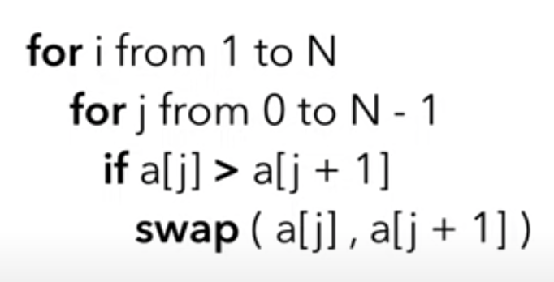

const arr = [1,6,2,9,33,6,1,3];
for (let i = 0; i < arr.length; i++) {
for (let j = 0; j < arr.length-1; j++) {
if (arr[j] > arr[j+1]) {
const temp = arr[j];
arr[j] = arr[j+1];
arr[j+1] = temp;
}
}
}
console.log(arr);
Add a boolean to check if any swaps occurred. The array is sorted if there are no swaps, so the loop can break.
const arr = [1,6,2,9,33,6,1,3];
let swap = false;
for (let i = 0; i < arr.length; i++) {
swap = false;
for (let j = 0; j < arr.length-1; j++) {
if (arr[j] > arr[j+1]) {
const temp = arr[j]; // temp variable stores value while swapping.
arr[j] = arr[j+1];
arr[j+1] = temp;
swap = true;
}
}
if (!swap) {
break;
}
}
console.log(arr);